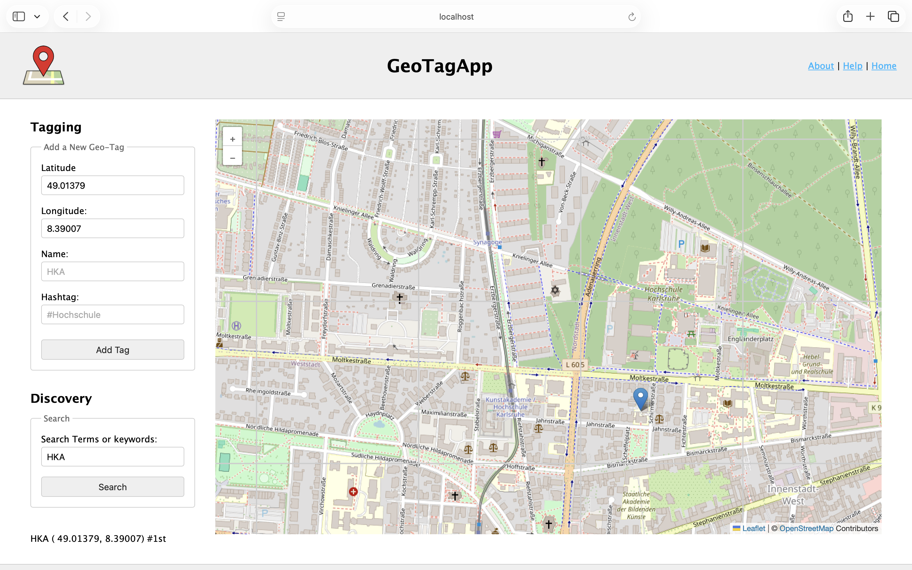

Geotagging App
Eine Social-Sharing-App für interessante Orte. Die Anwendung ermöglicht es Nutzern, Standorte zu markieren, Fotos hochzuladen und mit der Community zu teilen.

Hi, ich bin Fnan und ich bin Student an der Hochschule Karlsruhe. Mich begeistert es, kreative und funktionale Websites zu erstellen!
Eine Social-Sharing-App für interessante Orte. Die Anwendung ermöglicht es Nutzern, Standorte zu markieren, Fotos hochzuladen und mit der Community zu teilen.

Ein in Maya 3D nachgebautes Zoetrop. Das Projekt beleuchtet die Grundlagen der Animation und optischen Täuschungen im dreidimensionalen Raum.
Ein futuristisches UI/UX-Konzept für ein holographisches Display. Fokus lag auf intuitiver Gestensteuerung, räumlicher Tiefe und minimalistischer Informationsarchitektur.